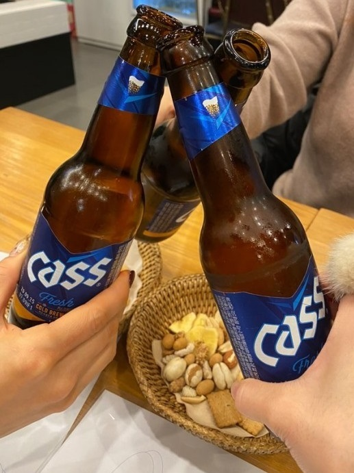
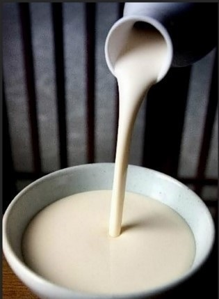
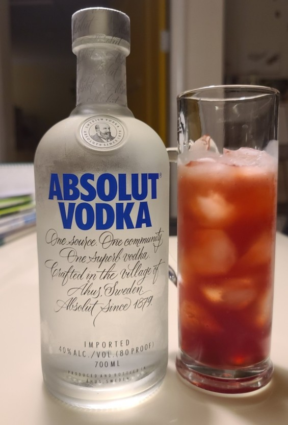
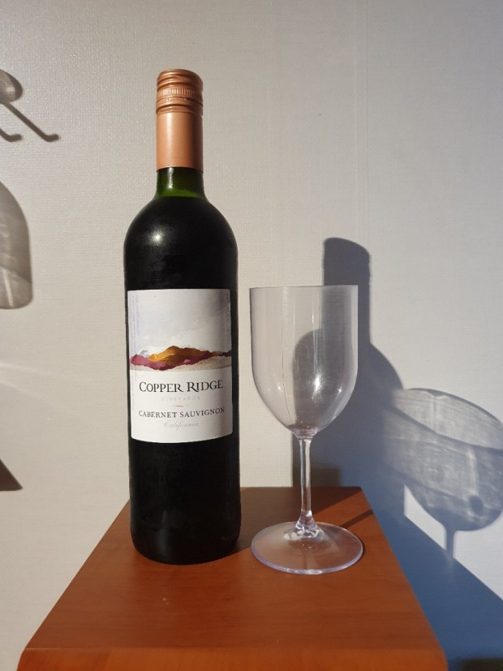

BOBLOG
홈
프로필
포트폴리오
팀프로젝트
기타
B
O
C
L
O
U
D
Drop into the Bar
...no...data...1
...no...data...2
...no...data...3
...no...data...4
...no...data...5
홈페이지이동
힘쓰게 하지마
유태균
성우상
심정보
이규민
이승훈
홈페이지명
Drop into a Bar
HTML CSS JAVASCRIPT
를 활용하여 만든 주류 소개 사이트
소주
이승훈
곡류를 발효시켜 증류하거나,
알코올을 물로 희석하여 만든 술
맥주
성우상
맥아로 즙을 만들어 여과한 후,
홉을 첨가하고 효모로 발효시켜
만든 술

막걸리
심정보
찹쌀·멥쌀·보리·밀가루 등을
쪄서 누룩과 물을 섞어 발효시킨
한국 고유의 술

보드카
유태균
러시아의 대표적인 증류주

와인
이규민
잘 익은 포도의 당분을 발효시켜 만든 알코올 음료
